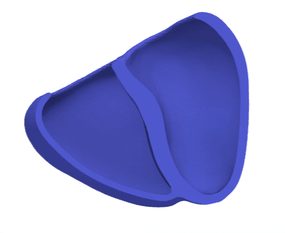

Mechanics Tutorial 1: Simple Contracting Ventricle

This tutorial shows how to perform a simulation for simple active mechanical behavior of heart chambers.
Introduction
A general model to simulate the contractile behavior of cardiact issues it the active stress model. Let us denote with $\Omega_{\mathrm{H}}$ our heart domain and with $u : \Omega_{\mathrm{H}} \to \mathbb{R}^3$ the unknown displacement field in three dimensional space. This induces a deformation gradient $\bm{F} = \bm{I} + \nabla \bm{u}$. With this formulation we can define a large class of active stress models in the first Piola-Kirchhoff stress with the following form:
\[\bm{P} = \partial_{\bm{F}} \psi_{\mathrm{p}} + \mathcal{N}(\bm{\alpha}) \, \partial_{\bm{F}} \psi_{\mathrm{a}}\]
According to Chadwick [1] the additive split of the stress in active and passive parts dates back to unpublished Peskin and has been popularized by Guccione et al. [2].
Commented Program
We start by loading Thunderbolt and LinearSolve to use a custom direct solver of our choice.
using Thunderbolt, LinearSolveOur goal is to simulate the contraction of a left ventricle with a very simple active stress formulation. Hence in a first step we need to load a suitable mesh. Thunderbolt can generate idealized geometries as follows.
mesh = generate_ideal_lv_mesh(11,2,5;
inner_radius = 0.7,
outer_radius = 1.0,
longitudinal_upper = 0.2,
apex_inner = 1.3,
apex_outer = 1.5
);Here the first 3 parameters control the number of elements in circumferential, radial and longitudinal directions. The number of elements is very low, so users have an easy time to play around with it. For scientific studies the mesh needs to be finer, such that the simulation converges properly. The remaining parameters control the chamber geometry shape itself.
We can also load realistic geometries with external formats. For this simply use either FerriteGmsh.jl or one of the loader functions stated in the mesh API.
Next we will define a coordinate system, which helps us to work with cardiac geometries. This way we can reuse different methods, like for example fiber generators, across geometries.
coordinate_system = compute_lv_coordinate_system(mesh);In this coordinate system we will now create a microstructure with linearly varying helix angle in transmural direction. The compute microstructure field will be generated on the function space of piecewise continuous first order Lagrange polynomials.
microstructure = create_microstructure_model(
coordinate_system,
LagrangeCollection{1}()^3,
ODB25LTMicrostructureParameters(),
);Now we describe the model which we want to use. The models provided by Thunderbolt are designed to be highly modular, so you can quickly swap out individual component or compose models with each other. For the active stress formulation we need first the active and passive material models. For this tutorial we use the models described by Guccione.
passive_material_model = Guccione1991PassiveModel()
active_material_model = Guccione1993ActiveModel();Furthermore we need to describe the calcium field and associate it with the sarcomere model. To simplify this tutorial we will use an analytical calcium profile. Note that we can also use experimental data or a precomputed calcium profile here, too, by simply changing the function implementation below.
function calcium_profile_function(x #=::LVCoordinate=#,t)
linear_interpolation(t,y1,y2,t1,t2) = y1 + (t-t1) * (y2-y1)/(t2-t1)
ca_peak(x) = 1.0
if 0 ≤ t ≤ 300.0
return linear_interpolation(t, 0.0, ca_peak(x), 0.0, 300.0)
elseif t ≤ 500.0
return linear_interpolation(t, ca_peak(x), 0.0, 300.0, 500.0)
else
return 0.0
end
end
calcium_field = AnalyticalCoefficient(
calcium_profile_function,
coordinate_system,
);We will use for a very simple sarcomere model which is constant in the calcium concentration. Note that a using a sarcomere model which has evoluation equations or rate-dependent terms will require different solvers.
sarcomere_model = CaDrivenInternalSarcomereModel(ConstantStretchModel(), calcium_field);Now we have everything set to describe our active stress model by passing all the model components into it.
active_stress_model = ActiveStressModel(
passive_material_model,
active_material_model,
sarcomere_model,
microstructure,
);Next we define some boundary conditions. In order to have a very rough approximation of the effect of the pericardium, we use a Robin boundary condition.
weak_boundary_conditions = (RobinBC(1.0, "Epicardium"),)(RobinBC(1.0, "Epicardium", :auto),)The pericardium is not purely elastic, though — the sac is fluid filled, so it also resists how fast the epicardial surface moves against it. We come back to that in the second variant at the end of this tutorial, once the undamped problem is solved.
We finalize the mechanical model by assigning a symbol to identify the unknown solution field and connect the active stress model with the weak boundary conditions.
mechanical_model = QuasiStaticModel(:displacement, active_stress_model, weak_boundary_conditions)QuasiStaticModel{ActiveStressModel{Guccione1991PassiveModel{SimpleCompressionPenalty{Float64}}, Guccione1993ActiveModel, CaDrivenInternalSarcomereModel{ConstantStretchModel{Float64}, AnalyticalCoefficient{typeof(Main.var"Main".calcium_profile_function), LVCoordinateSystem{Float64, DofHandler{3, Thunderbolt.SimpleMesh{3, Union{Hexahedron, Wedge}, Float64}}, LagrangeCollection{1}, DofHandler{3, Thunderbolt.SimpleMesh{3, Union{Hexahedron, Wedge}, Float64}}, DiscontinuousLagrangeCollection{1}}}}, OrthotropicMicrostructureModel{FieldCoefficient{Vec{3, Float64}, Thunderbolt.ElementwiseData{Vec{3, Float64}, Vector{Vec{3, Float64}}, Vector{Int64}}, Thunderbolt.VectorizedInterpolationCollection{3, LagrangeCollection{1}}}, FieldCoefficient{Vec{3, Float64}, Thunderbolt.ElementwiseData{Vec{3, Float64}, Vector{Vec{3, Float64}}, Vector{Int64}}, Thunderbolt.VectorizedInterpolationCollection{3, LagrangeCollection{1}}}, FieldCoefficient{Vec{3, Float64}, Thunderbolt.ElementwiseData{Vec{3, Float64}, Vector{Vec{3, Float64}}, Vector{Int64}}, Thunderbolt.VectorizedInterpolationCollection{3, LagrangeCollection{1}}}}}, Tuple{RobinBC}}(:displacement, ActiveStressModel{Guccione1991PassiveModel{SimpleCompressionPenalty{Float64}}, Guccione1993ActiveModel, CaDrivenInternalSarcomereModel{ConstantStretchModel{Float64}, AnalyticalCoefficient{typeof(Main.var"Main".calcium_profile_function), LVCoordinateSystem{Float64, DofHandler{3, Thunderbolt.SimpleMesh{3, Union{Hexahedron, Wedge}, Float64}}, LagrangeCollection{1}, DofHandler{3, Thunderbolt.SimpleMesh{3, Union{Hexahedron, Wedge}, Float64}}, DiscontinuousLagrangeCollection{1}}}}, OrthotropicMicrostructureModel{FieldCoefficient{Vec{3, Float64}, Thunderbolt.ElementwiseData{Vec{3, Float64}, Vector{Vec{3, Float64}}, Vector{Int64}}, Thunderbolt.VectorizedInterpolationCollection{3, LagrangeCollection{1}}}, FieldCoefficient{Vec{3, Float64}, Thunderbolt.ElementwiseData{Vec{3, Float64}, Vector{Vec{3, Float64}}, Vector{Int64}}, Thunderbolt.VectorizedInterpolationCollection{3, LagrangeCollection{1}}}, FieldCoefficient{Vec{3, Float64}, Thunderbolt.ElementwiseData{Vec{3, Float64}, Vector{Vec{3, Float64}}, Vector{Int64}}, Thunderbolt.VectorizedInterpolationCollection{3, LagrangeCollection{1}}}}}(Guccione1991PassiveModel{SimpleCompressionPenalty{Float64}}(0.1, 29.8, 14.9, 14.9, 9.3, 19.2, 14.4, SimpleCompressionPenalty{Float64}(50.0)), Guccione1993ActiveModel(135.0, 1.45, 1.8, 4.35, 4.35, 3.8), CaDrivenInternalSarcomereModel{ConstantStretchModel{Float64}, AnalyticalCoefficient{typeof(Main.var"Main".calcium_profile_function), LVCoordinateSystem{Float64, DofHandler{3, Thunderbolt.SimpleMesh{3, Union{Hexahedron, Wedge}, Float64}}, LagrangeCollection{1}, DofHandler{3, Thunderbolt.SimpleMesh{3, Union{Hexahedron, Wedge}, Float64}}, DiscontinuousLagrangeCollection{1}}}}(ConstantStretchModel{Float64}(1.0), AnalyticalCoefficient{typeof(Main.var"Main".calcium_profile_function), LVCoordinateSystem{Float64, DofHandler{3, Thunderbolt.SimpleMesh{3, Union{Hexahedron, Wedge}, Float64}}, LagrangeCollection{1}, DofHandler{3, Thunderbolt.SimpleMesh{3, Union{Hexahedron, Wedge}, Float64}}, DiscontinuousLagrangeCollection{1}}}(Main.var"Main".calcium_profile_function, LVCoordinateSystem{Float64, DofHandler{3, Thunderbolt.SimpleMesh{3, Union{Hexahedron, Wedge}, Float64}}, LagrangeCollection{1}, DofHandler{3, Thunderbolt.SimpleMesh{3, Union{Hexahedron, Wedge}, Float64}}, DiscontinuousLagrangeCollection{1}}(DofHandler{3, Thunderbolt.SimpleMesh{3, Union{Hexahedron, Wedge}, Float64}}(SubDofHandler{DofHandler{3, Thunderbolt.SimpleMesh{3, Union{Hexahedron, Wedge}, Float64}}}[SubDofHandler{DofHandler{3, Thunderbolt.SimpleMesh{3, Union{Hexahedron, Wedge}, Float64}}}(DofHandler{3, Thunderbolt.SimpleMesh{3, Union{Hexahedron, Wedge}, Float64}}(#= circular reference @-3 =#), OrderedCollections.OrderedSet{Int64}([1, 2, 3, 4, 5, 6, 7, 8, 9, 10 … 101, 102, 103, 104, 105, 106, 107, 108, 109, 110]), [:coordinates], Interpolation[Lagrange{RefHexahedron, 1}()], Int64[], 8), SubDofHandler{DofHandler{3, Thunderbolt.SimpleMesh{3, Union{Hexahedron, Wedge}, Float64}}}(DofHandler{3, Thunderbolt.SimpleMesh{3, Union{Hexahedron, Wedge}, Float64}}(#= circular reference @-3 =#), OrderedCollections.OrderedSet{Int64}([111, 112, 113, 114, 115, 116, 117, 118, 119, 120 … 123, 124, 125, 126, 127, 128, 129, 130, 131, 132]), [:coordinates], Interpolation[Lagrange{RefPrism, 1}()], Int64[], 6)], [:coordinates], [1, 2, 3, 4, 5, 6, 7, 8, 2, 9 … 42, 201, 63, 65, 200, 42, 4, 201, 65, 46], [1, 9, 17, 25, 33, 41, 49, 57, 65, 73 … 953, 959, 965, 971, 977, 983, 989, 995, 1001, 1007], [1, 1, 1, 1, 1, 1, 1, 1, 1, 1 … 2, 2, 2, 2, 2, 2, 2, 2, 2, 2], true, Thunderbolt.SimpleMesh{3, Union{Hexahedron, Wedge}, Float64}(Grid{3, Union{Hexahedron, Wedge}, Float64}(Union{Hexahedron, Wedge}[Hexahedron((1, 2, 13, 12, 34, 35, 46, 45)), Hexahedron((2, 3, 14, 13, 35, 36, 47, 46)), Hexahedron((3, 4, 15, 14, 36, 37, 48, 47)), Hexahedron((4, 5, 16, 15, 37, 38, 49, 48)), Hexahedron((5, 6, 17, 16, 38, 39, 50, 49)), Hexahedron((6, 7, 18, 17, 39, 40, 51, 50)), Hexahedron((7, 8, 19, 18, 40, 41, 52, 51)), Hexahedron((8, 9, 20, 19, 41, 42, 53, 52)), Hexahedron((9, 10, 21, 20, 42, 43, 54, 53)), Hexahedron((10, 11, 22, 21, 43, 44, 55, 54)) … Wedge((200, 13, 14, 201, 24, 25)), Wedge((200, 14, 15, 201, 25, 26)), Wedge((200, 15, 16, 201, 26, 27)), Wedge((200, 16, 17, 201, 27, 28)), Wedge((200, 17, 18, 201, 28, 29)), Wedge((200, 18, 19, 201, 29, 30)), Wedge((200, 19, 20, 201, 30, 31)), Wedge((200, 20, 21, 201, 31, 32)), Wedge((200, 21, 22, 201, 32, 33)), Wedge((200, 22, 12, 201, 33, 23))], Node{3, Float64}[Node{3, Float64}([0.21631189606246318, 0.0, 1.2363734711836996]), Node{3, Float64}([0.18197314675595838, 0.11694704031258034, 1.2363734711836996]), Node{3, Float64}([0.08985920911525085, 0.19676422163421756, 1.2363734711836996]), Node{3, Float64}([-0.03078439250471708, 0.21411015285654575, 1.2363734711836996]), Node{3, Float64}([-0.14165416701656083, 0.1634776233769691, 1.2363734711836996]), Node{3, Float64}([-0.20754974438116286, 0.06094210355289533, 1.2363734711836996]), Node{3, Float64}([-0.2075497443811629, -0.06094210355289527, 1.2363734711836996]), Node{3, Float64}([-0.14165416701656086, -0.16347762337696908, 1.2363734711836996]), Node{3, Float64}([-0.030784392504717126, -0.21411015285654572, 1.2363734711836996]), Node{3, Float64}([0.08985920911525076, -0.19676422163421758, 1.2363734711836996]) … Node{3, Float64}([-0.6228095682844902, 0.718760557376906, -0.463525491562421]), Node{3, Float64}([-0.9125320448954817, 0.26794358403653645, -0.463525491562421]), Node{3, Float64}([-0.9125320448954818, -0.2679435840365362, -0.463525491562421]), Node{3, Float64}([-0.6228095682844904, -0.7187605573769059, -0.463525491562421]), Node{3, Float64}([-0.13534945430529885, -0.9413761322695258, -0.463525491562421]), Node{3, Float64}([0.3950831550822797, -0.8651114366124778, -0.463525491562421]), Node{3, Float64}([0.8000796542554138, -0.5141799724162845, -0.463525491562421]), Node{3, Float64}([0.0, 0.0, 1.3]), Node{3, Float64}([0.0, 0.0, 1.4]), Node{3, Float64}([0.0, 0.0, 1.5])], Dict{String, OrderedCollections.OrderedSet{Int64}}("myocardium" => OrderedCollections.OrderedSet{Int64}([1, 2, 3, 4, 5, 6, 7, 8, 9, 10 … 123, 124, 125, 126, 127, 128, 129, 130, 131, 132])), Dict{String, OrderedCollections.OrderedSet{Int64}}("MyocardialAnchor1" => OrderedCollections.OrderedSet{Int64}([166]), "Apex" => OrderedCollections.OrderedSet{Int64}([201]), "ApexInOut" => OrderedCollections.OrderedSet{Int64}([199, 201]), "MyocardialAnchor2" => OrderedCollections.OrderedSet{Int64}([188]), "MyocardialAnchor3" => OrderedCollections.OrderedSet{Int64}([169]), "MyocardialAnchor4" => OrderedCollections.OrderedSet{Int64}([175])), Dict{String, OrderedCollections.OrderedSet{FacetIndex}}("Epicardium" => OrderedCollections.OrderedSet{FacetIndex}([FacetIndex((12, 4)), FacetIndex((13, 4)), FacetIndex((14, 4)), FacetIndex((15, 4)), FacetIndex((16, 4)), FacetIndex((17, 4)), FacetIndex((18, 4)), FacetIndex((19, 4)), FacetIndex((20, 4)), FacetIndex((21, 4)) … FacetIndex((123, 5)), FacetIndex((124, 5)), FacetIndex((125, 5)), FacetIndex((126, 5)), FacetIndex((127, 5)), FacetIndex((128, 5)), FacetIndex((129, 5)), FacetIndex((130, 5)), FacetIndex((131, 5)), FacetIndex((132, 5))]), "Base" => OrderedCollections.OrderedSet{FacetIndex}([FacetIndex((89, 6)), FacetIndex((90, 6)), FacetIndex((91, 6)), FacetIndex((92, 6)), FacetIndex((93, 6)), FacetIndex((94, 6)), FacetIndex((95, 6)), FacetIndex((96, 6)), FacetIndex((97, 6)), FacetIndex((98, 6)) … FacetIndex((101, 6)), FacetIndex((102, 6)), FacetIndex((103, 6)), FacetIndex((104, 6)), FacetIndex((105, 6)), FacetIndex((106, 6)), FacetIndex((107, 6)), FacetIndex((108, 6)), FacetIndex((109, 6)), FacetIndex((110, 6))]), "SRidgePost" => OrderedCollections.OrderedSet{FacetIndex}([FacetIndex((1, 5)), FacetIndex((12, 5)), FacetIndex((23, 5)), FacetIndex((34, 5)), FacetIndex((45, 5)), FacetIndex((56, 5)), FacetIndex((67, 5)), FacetIndex((78, 5)), FacetIndex((89, 5)), FacetIndex((100, 5)), FacetIndex((111, 2)), FacetIndex((122, 2))]), "SRidgeAnt" => OrderedCollections.OrderedSet{FacetIndex}([FacetIndex((4, 3)), FacetIndex((15, 3)), FacetIndex((26, 3)), FacetIndex((37, 3)), FacetIndex((48, 3)), FacetIndex((59, 3)), FacetIndex((70, 3)), FacetIndex((81, 3)), FacetIndex((92, 3)), FacetIndex((103, 3)), FacetIndex((114, 3)), FacetIndex((125, 3))]), "Endocardium" => OrderedCollections.OrderedSet{FacetIndex}([FacetIndex((1, 2)), FacetIndex((2, 2)), FacetIndex((3, 2)), FacetIndex((4, 2)), FacetIndex((5, 2)), FacetIndex((6, 2)), FacetIndex((7, 2)), FacetIndex((8, 2)), FacetIndex((9, 2)), FacetIndex((10, 2)) … FacetIndex((112, 1)), FacetIndex((113, 1)), FacetIndex((114, 1)), FacetIndex((115, 1)), FacetIndex((116, 1)), FacetIndex((117, 1)), FacetIndex((118, 1)), FacetIndex((119, 1)), FacetIndex((120, 1)), FacetIndex((121, 1))])), Dict{String, OrderedCollections.OrderedSet{VertexIndex}}()), OrderedCollections.OrderedDict{Tuple{Int64, Int64, Int64}, Int64}(), OrderedCollections.OrderedDict{Tuple{Int64, Int64}, Int64}(), OrderedCollections.OrderedDict{Int64, Int64}(), OrderedCollections.OrderedDict{DataType, Int64}(Hexahedron => 110, Wedge => 22), OrderedCollections.OrderedDict{String, Thunderbolt.VolumetricSubdomainDescriptor}("myocardium" => Thunderbolt.VolumetricSubdomainDescriptor(OrderedCollections.OrderedDict{Type, OrderedCollections.OrderedSet{CellIndex}}(Hexahedron => OrderedCollections.OrderedSet{CellIndex}([CellIndex(1), CellIndex(2), CellIndex(3), CellIndex(4), CellIndex(5), CellIndex(6), CellIndex(7), CellIndex(8), CellIndex(9), CellIndex(10) … CellIndex(101), CellIndex(102), CellIndex(103), CellIndex(104), CellIndex(105), CellIndex(106), CellIndex(107), CellIndex(108), CellIndex(109), CellIndex(110)]), Wedge => OrderedCollections.OrderedSet{CellIndex}([CellIndex(111), CellIndex(112), CellIndex(113), CellIndex(114), CellIndex(115), CellIndex(116), CellIndex(117), CellIndex(118), CellIndex(119), CellIndex(120) … CellIndex(123), CellIndex(124), CellIndex(125), CellIndex(126), CellIndex(127), CellIndex(128), CellIndex(129), CellIndex(130), CellIndex(131), CellIndex(132)])))), OrderedCollections.OrderedDict{String, Thunderbolt.SurfaceSubdomainDescriptor}("Epicardium" => Thunderbolt.SurfaceSubdomainDescriptor(OrderedCollections.OrderedDict{Type, OrderedCollections.OrderedSet{FacetIndex}}(Hexahedron => OrderedCollections.OrderedSet{FacetIndex}([FacetIndex((12, 4)), FacetIndex((13, 4)), FacetIndex((14, 4)), FacetIndex((15, 4)), FacetIndex((16, 4)), FacetIndex((17, 4)), FacetIndex((18, 4)), FacetIndex((19, 4)), FacetIndex((20, 4)), FacetIndex((21, 4)) … FacetIndex((101, 4)), FacetIndex((102, 4)), FacetIndex((103, 4)), FacetIndex((104, 4)), FacetIndex((105, 4)), FacetIndex((106, 4)), FacetIndex((107, 4)), FacetIndex((108, 4)), FacetIndex((109, 4)), FacetIndex((110, 4))]), Wedge => OrderedCollections.OrderedSet{FacetIndex}([FacetIndex((122, 5)), FacetIndex((123, 5)), FacetIndex((124, 5)), FacetIndex((125, 5)), FacetIndex((126, 5)), FacetIndex((127, 5)), FacetIndex((128, 5)), FacetIndex((129, 5)), FacetIndex((130, 5)), FacetIndex((131, 5)), FacetIndex((132, 5))]))), "Base" => Thunderbolt.SurfaceSubdomainDescriptor(OrderedCollections.OrderedDict{Type, OrderedCollections.OrderedSet{FacetIndex}}(Hexahedron => OrderedCollections.OrderedSet{FacetIndex}([FacetIndex((89, 6)), FacetIndex((90, 6)), FacetIndex((91, 6)), FacetIndex((92, 6)), FacetIndex((93, 6)), FacetIndex((94, 6)), FacetIndex((95, 6)), FacetIndex((96, 6)), FacetIndex((97, 6)), FacetIndex((98, 6)) … FacetIndex((101, 6)), FacetIndex((102, 6)), FacetIndex((103, 6)), FacetIndex((104, 6)), FacetIndex((105, 6)), FacetIndex((106, 6)), FacetIndex((107, 6)), FacetIndex((108, 6)), FacetIndex((109, 6)), FacetIndex((110, 6))]))), "SRidgePost" => Thunderbolt.SurfaceSubdomainDescriptor(OrderedCollections.OrderedDict{Type, OrderedCollections.OrderedSet{FacetIndex}}(Hexahedron => OrderedCollections.OrderedSet{FacetIndex}([FacetIndex((1, 5)), FacetIndex((12, 5)), FacetIndex((23, 5)), FacetIndex((34, 5)), FacetIndex((45, 5)), FacetIndex((56, 5)), FacetIndex((67, 5)), FacetIndex((78, 5)), FacetIndex((89, 5)), FacetIndex((100, 5))]), Wedge => OrderedCollections.OrderedSet{FacetIndex}([FacetIndex((111, 2)), FacetIndex((122, 2))]))), "SRidgeAnt" => Thunderbolt.SurfaceSubdomainDescriptor(OrderedCollections.OrderedDict{Type, OrderedCollections.OrderedSet{FacetIndex}}(Hexahedron => OrderedCollections.OrderedSet{FacetIndex}([FacetIndex((4, 3)), FacetIndex((15, 3)), FacetIndex((26, 3)), FacetIndex((37, 3)), FacetIndex((48, 3)), FacetIndex((59, 3)), FacetIndex((70, 3)), FacetIndex((81, 3)), FacetIndex((92, 3)), FacetIndex((103, 3))]), Wedge => OrderedCollections.OrderedSet{FacetIndex}([FacetIndex((114, 3)), FacetIndex((125, 3))]))), "Endocardium" => Thunderbolt.SurfaceSubdomainDescriptor(OrderedCollections.OrderedDict{Type, OrderedCollections.OrderedSet{FacetIndex}}(Hexahedron => OrderedCollections.OrderedSet{FacetIndex}([FacetIndex((1, 2)), FacetIndex((2, 2)), FacetIndex((3, 2)), FacetIndex((4, 2)), FacetIndex((5, 2)), FacetIndex((6, 2)), FacetIndex((7, 2)), FacetIndex((8, 2)), FacetIndex((9, 2)), FacetIndex((10, 2)) … FacetIndex((90, 2)), FacetIndex((91, 2)), FacetIndex((92, 2)), FacetIndex((93, 2)), FacetIndex((94, 2)), FacetIndex((95, 2)), FacetIndex((96, 2)), FacetIndex((97, 2)), FacetIndex((98, 2)), FacetIndex((99, 2))]), Wedge => OrderedCollections.OrderedSet{FacetIndex}([FacetIndex((111, 1)), FacetIndex((112, 1)), FacetIndex((113, 1)), FacetIndex((114, 1)), FacetIndex((115, 1)), FacetIndex((116, 1)), FacetIndex((117, 1)), FacetIndex((118, 1)), FacetIndex((119, 1)), FacetIndex((120, 1)), FacetIndex((121, 1))])))), OrderedCollections.OrderedDict{String, Thunderbolt.InterfaceSubdomainDescriptor}()), 201, nothing), LagrangeCollection{1}(), [0.0, 0.0, 0.5944976258784385, 0.5944976258784386, 0.0, 0.0, 0.5729991976061601, 0.5729991976061601, 0.0, 0.5944976258784389 … 1.0, 1.0, 1.0, 1.0, 1.0, 1.0, 1.0, 0.0, 0.5679402043235188, 1.0], [0.2212900655039608, 0.2212900655026072, 0.22005856241733068, 0.22005856241427468, 0.318447872641349, 0.31844787262250185, 0.31388083041517456, 0.3138808303697569, 0.22129006550186814, 0.22005856241895527 … 1.0, 1.0, 1.0, 1.0, 1.0, 1.0, 1.0, 0.12086034165017545, 0.0837798317388444, 0.0], DofHandler{3, Thunderbolt.SimpleMesh{3, Union{Hexahedron, Wedge}, Float64}}(SubDofHandler{DofHandler{3, Thunderbolt.SimpleMesh{3, Union{Hexahedron, Wedge}, Float64}}}[SubDofHandler{DofHandler{3, Thunderbolt.SimpleMesh{3, Union{Hexahedron, Wedge}, Float64}}}(DofHandler{3, Thunderbolt.SimpleMesh{3, Union{Hexahedron, Wedge}, Float64}}(#= circular reference @-3 =#), OrderedCollections.OrderedSet{Int64}([1, 2, 3, 4, 5, 6, 7, 8, 9, 10 … 101, 102, 103, 104, 105, 106, 107, 108, 109, 110]), [:coordinates], Interpolation[DiscontinuousLagrange{RefHexahedron, 1}()], Int64[], 8), SubDofHandler{DofHandler{3, Thunderbolt.SimpleMesh{3, Union{Hexahedron, Wedge}, Float64}}}(DofHandler{3, Thunderbolt.SimpleMesh{3, Union{Hexahedron, Wedge}, Float64}}(#= circular reference @-3 =#), OrderedCollections.OrderedSet{Int64}([111, 112, 113, 114, 115, 116, 117, 118, 119, 120 … 123, 124, 125, 126, 127, 128, 129, 130, 131, 132]), [:coordinates], Interpolation[DiscontinuousLagrange{RefPrism, 1}()], Int64[], 6)], [:coordinates], [1, 2, 3, 4, 5, 6, 7, 8, 9, 10 … 1003, 1004, 1005, 1006, 1007, 1008, 1009, 1010, 1011, 1012], [1, 9, 17, 25, 33, 41, 49, 57, 65, 73 … 953, 959, 965, 971, 977, 983, 989, 995, 1001, 1007], [1, 1, 1, 1, 1, 1, 1, 1, 1, 1 … 2, 2, 2, 2, 2, 2, 2, 2, 2, 2], true, Thunderbolt.SimpleMesh{3, Union{Hexahedron, Wedge}, Float64}(Grid{3, Union{Hexahedron, Wedge}, Float64}(Union{Hexahedron, Wedge}[Hexahedron((1, 2, 13, 12, 34, 35, 46, 45)), Hexahedron((2, 3, 14, 13, 35, 36, 47, 46)), Hexahedron((3, 4, 15, 14, 36, 37, 48, 47)), Hexahedron((4, 5, 16, 15, 37, 38, 49, 48)), Hexahedron((5, 6, 17, 16, 38, 39, 50, 49)), Hexahedron((6, 7, 18, 17, 39, 40, 51, 50)), Hexahedron((7, 8, 19, 18, 40, 41, 52, 51)), Hexahedron((8, 9, 20, 19, 41, 42, 53, 52)), Hexahedron((9, 10, 21, 20, 42, 43, 54, 53)), Hexahedron((10, 11, 22, 21, 43, 44, 55, 54)) … Wedge((200, 13, 14, 201, 24, 25)), Wedge((200, 14, 15, 201, 25, 26)), Wedge((200, 15, 16, 201, 26, 27)), Wedge((200, 16, 17, 201, 27, 28)), Wedge((200, 17, 18, 201, 28, 29)), Wedge((200, 18, 19, 201, 29, 30)), Wedge((200, 19, 20, 201, 30, 31)), Wedge((200, 20, 21, 201, 31, 32)), Wedge((200, 21, 22, 201, 32, 33)), Wedge((200, 22, 12, 201, 33, 23))], Node{3, Float64}[Node{3, Float64}([0.21631189606246318, 0.0, 1.2363734711836996]), Node{3, Float64}([0.18197314675595838, 0.11694704031258034, 1.2363734711836996]), Node{3, Float64}([0.08985920911525085, 0.19676422163421756, 1.2363734711836996]), Node{3, Float64}([-0.03078439250471708, 0.21411015285654575, 1.2363734711836996]), Node{3, Float64}([-0.14165416701656083, 0.1634776233769691, 1.2363734711836996]), Node{3, Float64}([-0.20754974438116286, 0.06094210355289533, 1.2363734711836996]), Node{3, Float64}([-0.2075497443811629, -0.06094210355289527, 1.2363734711836996]), Node{3, Float64}([-0.14165416701656086, -0.16347762337696908, 1.2363734711836996]), Node{3, Float64}([-0.030784392504717126, -0.21411015285654572, 1.2363734711836996]), Node{3, Float64}([0.08985920911525076, -0.19676422163421758, 1.2363734711836996]) … Node{3, Float64}([-0.6228095682844902, 0.718760557376906, -0.463525491562421]), Node{3, Float64}([-0.9125320448954817, 0.26794358403653645, -0.463525491562421]), Node{3, Float64}([-0.9125320448954818, -0.2679435840365362, -0.463525491562421]), Node{3, Float64}([-0.6228095682844904, -0.7187605573769059, -0.463525491562421]), Node{3, Float64}([-0.13534945430529885, -0.9413761322695258, -0.463525491562421]), Node{3, Float64}([0.3950831550822797, -0.8651114366124778, -0.463525491562421]), Node{3, Float64}([0.8000796542554138, -0.5141799724162845, -0.463525491562421]), Node{3, Float64}([0.0, 0.0, 1.3]), Node{3, Float64}([0.0, 0.0, 1.4]), Node{3, Float64}([0.0, 0.0, 1.5])], Dict{String, OrderedCollections.OrderedSet{Int64}}("myocardium" => OrderedCollections.OrderedSet{Int64}([1, 2, 3, 4, 5, 6, 7, 8, 9, 10 … 123, 124, 125, 126, 127, 128, 129, 130, 131, 132])), Dict{String, OrderedCollections.OrderedSet{Int64}}("MyocardialAnchor1" => OrderedCollections.OrderedSet{Int64}([166]), "Apex" => OrderedCollections.OrderedSet{Int64}([201]), "ApexInOut" => OrderedCollections.OrderedSet{Int64}([199, 201]), "MyocardialAnchor2" => OrderedCollections.OrderedSet{Int64}([188]), "MyocardialAnchor3" => OrderedCollections.OrderedSet{Int64}([169]), "MyocardialAnchor4" => OrderedCollections.OrderedSet{Int64}([175])), Dict{String, OrderedCollections.OrderedSet{FacetIndex}}("Epicardium" => OrderedCollections.OrderedSet{FacetIndex}([FacetIndex((12, 4)), FacetIndex((13, 4)), FacetIndex((14, 4)), FacetIndex((15, 4)), FacetIndex((16, 4)), FacetIndex((17, 4)), FacetIndex((18, 4)), FacetIndex((19, 4)), FacetIndex((20, 4)), FacetIndex((21, 4)) … FacetIndex((123, 5)), FacetIndex((124, 5)), FacetIndex((125, 5)), FacetIndex((126, 5)), FacetIndex((127, 5)), FacetIndex((128, 5)), FacetIndex((129, 5)), FacetIndex((130, 5)), FacetIndex((131, 5)), FacetIndex((132, 5))]), "Base" => OrderedCollections.OrderedSet{FacetIndex}([FacetIndex((89, 6)), FacetIndex((90, 6)), FacetIndex((91, 6)), FacetIndex((92, 6)), FacetIndex((93, 6)), FacetIndex((94, 6)), FacetIndex((95, 6)), FacetIndex((96, 6)), FacetIndex((97, 6)), FacetIndex((98, 6)) … FacetIndex((101, 6)), FacetIndex((102, 6)), FacetIndex((103, 6)), FacetIndex((104, 6)), FacetIndex((105, 6)), FacetIndex((106, 6)), FacetIndex((107, 6)), FacetIndex((108, 6)), FacetIndex((109, 6)), FacetIndex((110, 6))]), "SRidgePost" => OrderedCollections.OrderedSet{FacetIndex}([FacetIndex((1, 5)), FacetIndex((12, 5)), FacetIndex((23, 5)), FacetIndex((34, 5)), FacetIndex((45, 5)), FacetIndex((56, 5)), FacetIndex((67, 5)), FacetIndex((78, 5)), FacetIndex((89, 5)), FacetIndex((100, 5)), FacetIndex((111, 2)), FacetIndex((122, 2))]), "SRidgeAnt" => OrderedCollections.OrderedSet{FacetIndex}([FacetIndex((4, 3)), FacetIndex((15, 3)), FacetIndex((26, 3)), FacetIndex((37, 3)), FacetIndex((48, 3)), FacetIndex((59, 3)), FacetIndex((70, 3)), FacetIndex((81, 3)), FacetIndex((92, 3)), FacetIndex((103, 3)), FacetIndex((114, 3)), FacetIndex((125, 3))]), "Endocardium" => OrderedCollections.OrderedSet{FacetIndex}([FacetIndex((1, 2)), FacetIndex((2, 2)), FacetIndex((3, 2)), FacetIndex((4, 2)), FacetIndex((5, 2)), FacetIndex((6, 2)), FacetIndex((7, 2)), FacetIndex((8, 2)), FacetIndex((9, 2)), FacetIndex((10, 2)) … FacetIndex((112, 1)), FacetIndex((113, 1)), FacetIndex((114, 1)), FacetIndex((115, 1)), FacetIndex((116, 1)), FacetIndex((117, 1)), FacetIndex((118, 1)), FacetIndex((119, 1)), FacetIndex((120, 1)), FacetIndex((121, 1))])), Dict{String, OrderedCollections.OrderedSet{VertexIndex}}()), OrderedCollections.OrderedDict{Tuple{Int64, Int64, Int64}, Int64}(), OrderedCollections.OrderedDict{Tuple{Int64, Int64}, Int64}(), OrderedCollections.OrderedDict{Int64, Int64}(), OrderedCollections.OrderedDict{DataType, Int64}(Hexahedron => 110, Wedge => 22), OrderedCollections.OrderedDict{String, Thunderbolt.VolumetricSubdomainDescriptor}("myocardium" => Thunderbolt.VolumetricSubdomainDescriptor(OrderedCollections.OrderedDict{Type, OrderedCollections.OrderedSet{CellIndex}}(Hexahedron => OrderedCollections.OrderedSet{CellIndex}([CellIndex(1), CellIndex(2), CellIndex(3), CellIndex(4), CellIndex(5), CellIndex(6), CellIndex(7), CellIndex(8), CellIndex(9), CellIndex(10) … CellIndex(101), CellIndex(102), CellIndex(103), CellIndex(104), CellIndex(105), CellIndex(106), CellIndex(107), CellIndex(108), CellIndex(109), CellIndex(110)]), Wedge => OrderedCollections.OrderedSet{CellIndex}([CellIndex(111), CellIndex(112), CellIndex(113), CellIndex(114), CellIndex(115), CellIndex(116), CellIndex(117), CellIndex(118), CellIndex(119), CellIndex(120) … CellIndex(123), CellIndex(124), CellIndex(125), CellIndex(126), CellIndex(127), CellIndex(128), CellIndex(129), CellIndex(130), CellIndex(131), CellIndex(132)])))), OrderedCollections.OrderedDict{String, Thunderbolt.SurfaceSubdomainDescriptor}("Epicardium" => Thunderbolt.SurfaceSubdomainDescriptor(OrderedCollections.OrderedDict{Type, OrderedCollections.OrderedSet{FacetIndex}}(Hexahedron => OrderedCollections.OrderedSet{FacetIndex}([FacetIndex((12, 4)), FacetIndex((13, 4)), FacetIndex((14, 4)), FacetIndex((15, 4)), FacetIndex((16, 4)), FacetIndex((17, 4)), FacetIndex((18, 4)), FacetIndex((19, 4)), FacetIndex((20, 4)), FacetIndex((21, 4)) … FacetIndex((101, 4)), FacetIndex((102, 4)), FacetIndex((103, 4)), FacetIndex((104, 4)), FacetIndex((105, 4)), FacetIndex((106, 4)), FacetIndex((107, 4)), FacetIndex((108, 4)), FacetIndex((109, 4)), FacetIndex((110, 4))]), Wedge => OrderedCollections.OrderedSet{FacetIndex}([FacetIndex((122, 5)), FacetIndex((123, 5)), FacetIndex((124, 5)), FacetIndex((125, 5)), FacetIndex((126, 5)), FacetIndex((127, 5)), FacetIndex((128, 5)), FacetIndex((129, 5)), FacetIndex((130, 5)), FacetIndex((131, 5)), FacetIndex((132, 5))]))), "Base" => Thunderbolt.SurfaceSubdomainDescriptor(OrderedCollections.OrderedDict{Type, OrderedCollections.OrderedSet{FacetIndex}}(Hexahedron => OrderedCollections.OrderedSet{FacetIndex}([FacetIndex((89, 6)), FacetIndex((90, 6)), FacetIndex((91, 6)), FacetIndex((92, 6)), FacetIndex((93, 6)), FacetIndex((94, 6)), FacetIndex((95, 6)), FacetIndex((96, 6)), FacetIndex((97, 6)), FacetIndex((98, 6)) … FacetIndex((101, 6)), FacetIndex((102, 6)), FacetIndex((103, 6)), FacetIndex((104, 6)), FacetIndex((105, 6)), FacetIndex((106, 6)), FacetIndex((107, 6)), FacetIndex((108, 6)), FacetIndex((109, 6)), FacetIndex((110, 6))]))), "SRidgePost" => Thunderbolt.SurfaceSubdomainDescriptor(OrderedCollections.OrderedDict{Type, OrderedCollections.OrderedSet{FacetIndex}}(Hexahedron => OrderedCollections.OrderedSet{FacetIndex}([FacetIndex((1, 5)), FacetIndex((12, 5)), FacetIndex((23, 5)), FacetIndex((34, 5)), FacetIndex((45, 5)), FacetIndex((56, 5)), FacetIndex((67, 5)), FacetIndex((78, 5)), FacetIndex((89, 5)), FacetIndex((100, 5))]), Wedge => OrderedCollections.OrderedSet{FacetIndex}([FacetIndex((111, 2)), FacetIndex((122, 2))]))), "SRidgeAnt" => Thunderbolt.SurfaceSubdomainDescriptor(OrderedCollections.OrderedDict{Type, OrderedCollections.OrderedSet{FacetIndex}}(Hexahedron => OrderedCollections.OrderedSet{FacetIndex}([FacetIndex((4, 3)), FacetIndex((15, 3)), FacetIndex((26, 3)), FacetIndex((37, 3)), FacetIndex((48, 3)), FacetIndex((59, 3)), FacetIndex((70, 3)), FacetIndex((81, 3)), FacetIndex((92, 3)), FacetIndex((103, 3))]), Wedge => OrderedCollections.OrderedSet{FacetIndex}([FacetIndex((114, 3)), FacetIndex((125, 3))]))), "Endocardium" => Thunderbolt.SurfaceSubdomainDescriptor(OrderedCollections.OrderedDict{Type, OrderedCollections.OrderedSet{FacetIndex}}(Hexahedron => OrderedCollections.OrderedSet{FacetIndex}([FacetIndex((1, 2)), FacetIndex((2, 2)), FacetIndex((3, 2)), FacetIndex((4, 2)), FacetIndex((5, 2)), FacetIndex((6, 2)), FacetIndex((7, 2)), FacetIndex((8, 2)), FacetIndex((9, 2)), FacetIndex((10, 2)) … FacetIndex((90, 2)), FacetIndex((91, 2)), FacetIndex((92, 2)), FacetIndex((93, 2)), FacetIndex((94, 2)), FacetIndex((95, 2)), FacetIndex((96, 2)), FacetIndex((97, 2)), FacetIndex((98, 2)), FacetIndex((99, 2))]), Wedge => OrderedCollections.OrderedSet{FacetIndex}([FacetIndex((111, 1)), FacetIndex((112, 1)), FacetIndex((113, 1)), FacetIndex((114, 1)), FacetIndex((115, 1)), FacetIndex((116, 1)), FacetIndex((117, 1)), FacetIndex((118, 1)), FacetIndex((119, 1)), FacetIndex((120, 1)), FacetIndex((121, 1))])))), OrderedCollections.OrderedDict{String, Thunderbolt.InterfaceSubdomainDescriptor}()), 1012, nothing), DiscontinuousLagrangeCollection{1}(), [1.0, 0.909984782433032, 0.9100851926750345, 1.0, 1.0, 0.9168173666374236, 0.9166823254097618, 1.0, 0.909984782433032, 0.8333333318711897 … 0.12373292320390195, 0.3333333315632761, 0.21516655510460023, 0.12174877976008726, 0.33333333597519754, 0.12373292320390195, 0.0, 0.3333333315632761, 0.12174877976008726, 0.0]))), OrthotropicMicrostructureModel{FieldCoefficient{Vec{3, Float64}, Thunderbolt.ElementwiseData{Vec{3, Float64}, Vector{Vec{3, Float64}}, Vector{Int64}}, Thunderbolt.VectorizedInterpolationCollection{3, LagrangeCollection{1}}}, FieldCoefficient{Vec{3, Float64}, Thunderbolt.ElementwiseData{Vec{3, Float64}, Vector{Vec{3, Float64}}, Vector{Int64}}, Thunderbolt.VectorizedInterpolationCollection{3, LagrangeCollection{1}}}, FieldCoefficient{Vec{3, Float64}, Thunderbolt.ElementwiseData{Vec{3, Float64}, Vector{Vec{3, Float64}}, Vector{Int64}}, Thunderbolt.VectorizedInterpolationCollection{3, LagrangeCollection{1}}}}(FieldCoefficient{Vec{3, Float64}, Thunderbolt.ElementwiseData{Vec{3, Float64}, Vector{Vec{3, Float64}}, Vector{Int64}}, Thunderbolt.VectorizedInterpolationCollection{3, LagrangeCollection{1}}}(Vec{3, Float64}[], Thunderbolt.VectorizedInterpolationCollection{3, LagrangeCollection{1}}(LagrangeCollection{1}())), FieldCoefficient{Vec{3, Float64}, Thunderbolt.ElementwiseData{Vec{3, Float64}, Vector{Vec{3, Float64}}, Vector{Int64}}, Thunderbolt.VectorizedInterpolationCollection{3, LagrangeCollection{1}}}(Vec{3, Float64}[], Thunderbolt.VectorizedInterpolationCollection{3, LagrangeCollection{1}}(LagrangeCollection{1}())), FieldCoefficient{Vec{3, Float64}, Thunderbolt.ElementwiseData{Vec{3, Float64}, Vector{Vec{3, Float64}}, Vector{Int64}}, Thunderbolt.VectorizedInterpolationCollection{3, LagrangeCollection{1}}}(Vec{3, Float64}[], Thunderbolt.VectorizedInterpolationCollection{3, LagrangeCollection{1}}(LagrangeCollection{1}())))), (RobinBC(1.0, "Epicardium", :auto),))A full list of all models can be found in the API reference.
We now need to transform the space-time problem into a time-dependent problem by discretizing it spatially. This can be accomplished by the function semidiscretize, which takes a model and the disretization technique. Here we use a finite element discretization in space with first order Lagrange polynomials to discretize the displacement field.
The discretization API does now play well with multiple domains right now and will be updated with a possible breaking change in future releases.
spatial_discretization_method = FiniteElementDiscretization(
Dict(:displacement => LagrangeCollection{1}()^3),
)
quasistaticform = semidiscretize(mechanical_model, spatial_discretization_method, mesh);The remaining code is very similar to how we use SciML solvers. We first define our time domain, initial time step length and some dt for visualization.
dt₀ = 5.0
tspan = (0.0, 500.0)
dtvis = 10.0;Then we setup the problem. Since we have no time dependence in our active stress model the correct problem here is a quasistatic problem.
problem = QuasiStaticProblem(quasistaticform, tspan);Next we define the time stepper. Since there are no time derivatives appearing in our formulation we have to opt for a homotopy path method, which solve the time depentent problems adaptively. As our non-linear solver we choose the standard Newton-Raphson method and a direct solver for the inner linear system. For the theory behind homotopy path methods we refer to the corresponding theory manual on homotopy path methods
timestepper = HomotopyPathSolver(
NewtonRaphsonSolver(
max_iter=10,
inner_solver=LinearSolve.UMFPACKFactorization(),
)
);Now we initialize our time integrator as usual.
integrator = init(problem, timestepper, dt=dt₀, verbose=true, adaptive=true, dtmax=25.0);The post-processing API is not yet finished. Please revisit the tutorial later to see how to post-process the simulation online. Right now the solution is just exported into VTK, such that users can visualize the solution in e.g. ParaView.
Finally we solve the problem in time.
io = ParaViewWriter("CM01_simple_lv");
d = solution_variable(quasistaticform, :displacement)
for (u, t) in TimeChoiceIterator(integrator, tspan[1]:dtvis:tspan[2])
Thunderbolt.store_timestep!(io, t, mesh) do file
Thunderbolt.store_timestep_field!(io, t, u, d)
end
end;If you want to see more details of the solution process launch Julia with Thunderbolt as debug module:
JULIA_DEBUG=Thunderbolt julia --project --threads=auto my_simulation_runner.jlVariant: a viscously regularized pericardium
The Robin spring above is a crude pericardium: it resists the chamber pushing outwards, but not the speed at which it does so. The real sac is fluid filled and resists the rate too, and Thunderbolt provides the rate analogue of each Robin boundary condition — ViscousRobinBC resists the full velocity, the way RobinBC resists the full displacement, and ViscousNormalSpringBC resists only its normal component, the way NormalSpringBC does. Pairing a spring with its dashpot is how a damped pericardium is written.
weak_boundary_conditions_viscous = (
RobinBC(1.0, "Epicardium"),
ViscousNormalSpringBC(0.1, "Epicardium"),
);Holding a load constant long enough drives the velocity to zero, and with it the dashpot traction, so a damped solution settles on the same equilibrium the undamped one would have reached — it only takes a different path to get there. That is what makes a dashpot the natural way to put hysteresis into a cardiac cycle without moving the end-diastolic and end-systolic states.
mechanical_model_viscous = QuasiStaticModel(
:displacement,
active_stress_model,
weak_boundary_conditions_viscous,
)
quasistaticform_viscous =
semidiscretize(mechanical_model_viscous, spatial_discretization_method, mesh);A velocity is not a property of the model — it is something a time scheme reconstructs from the unknown displacement. The homotopy path solver used above is load stepping rather than time stepping, so it has neither a previous solution nor a timestep to form a rate from, and pairing it with a viscous boundary condition is refused during setup rather than silently ignored. We therefore switch to backward Euler, which reconstructs $\bm{v} = (\bm{u}_n - \bm{u}_{n-1})/\Delta t_n$.
problem_viscous = QuasiStaticProblem(quasistaticform_viscous, tspan)
timestepper_viscous = BackwardEulerSolver(
inner_solver = NewtonRaphsonSolver(
max_iter = 10,
inner_solver = LinearSolve.UMFPACKFactorization(),
),
);The sarcomere model used here is analytical — it carries no internal variables — so nothing is condensed at quadrature point level and the plain NewtonRaphsonSolver above solves the whole stage. A material that does carry an internal variable poses a local problem at every quadrature point on top of the global one, and closing those is what the local solver of a MultiLevelNewtonRaphsonSolver is for. Handing a plain Newton to such a stage is refused during setup, with the number of condensed unknowns named in the message, rather than quietly solving a system of the wrong size.
Now for the step size control, which is where this variant differs from an ordinary transient solve. Nothing in this model has a genuine time derivative: the dashpot was added as a regularizer, to give the solve something to contract against, not because the pericardium's viscosity is the physics under study. Controlling the temporal error would therefore be controlling the accuracy of an artefact. What we want instead is the largest step the Newton solver can still handle, which is what the convergence driven controllers of the homotopy path method measure — they read how well Newton contracted, following Deuflhard's affine invariant theory, and need no error estimate at all. Those controllers are not tied to continuation, so we can hand one to backward Euler directly.
controller = Deuflhard2004_B_DiscreteContinuationControllerVariant(; Θmin = 1/8, p = 1)
integrator_viscous = init(
problem_viscous,
timestepper_viscous,
dt = dt₀,
verbose = true,
controller = controller,
dtmax = 25.0,
);Passing controller is what turns the adaptivity on. Without it BackwardEulerSolver uses the whole dt you gave it for every step, which is usually what a transient solve with a meaningful timescale wants.
io_viscous = ParaViewWriter("CM01_simple_lv_viscous");
d = solution_variable(quasistaticform_viscous, :displacement)
for (u, t) in TimeChoiceIterator(integrator_viscous, tspan[1]:dtvis:tspan[2])
Thunderbolt.store_timestep!(io_viscous, t, mesh) do file
Thunderbolt.store_timestep_field!(io_viscous, t, u, d)
end
end;References
- [1]
- R. Chadwick. Mechanics of the left ventricle. Biophysical journal 39, 279–288 (1982).
- [2]
- J. M. Guccione, L. K. Waldman and A. D. McCulloch. Mechanics of Active Contraction in Cardiac Muscle: Part II—Cylindrical Models of the Systolic Left Ventricle. Journal of Biomechanical Engineering 115, 82–90 (1993).
Plain program
Here follows a version of the program without any comments. The file is also available here: cm01_simple-active-stress.jl.
using Thunderbolt, LinearSolve
mesh = generate_ideal_lv_mesh(11,2,5;
inner_radius = 0.7,
outer_radius = 1.0,
longitudinal_upper = 0.2,
apex_inner = 1.3,
apex_outer = 1.5
);
coordinate_system = compute_lv_coordinate_system(mesh);
microstructure = create_microstructure_model(
coordinate_system,
LagrangeCollection{1}()^3,
ODB25LTMicrostructureParameters(),
);
passive_material_model = Guccione1991PassiveModel()
active_material_model = Guccione1993ActiveModel();
function calcium_profile_function(x #=::LVCoordinate=#,t)
linear_interpolation(t,y1,y2,t1,t2) = y1 + (t-t1) * (y2-y1)/(t2-t1)
ca_peak(x) = 1.0
if 0 ≤ t ≤ 300.0
return linear_interpolation(t, 0.0, ca_peak(x), 0.0, 300.0)
elseif t ≤ 500.0
return linear_interpolation(t, ca_peak(x), 0.0, 300.0, 500.0)
else
return 0.0
end
end
calcium_field = AnalyticalCoefficient(
calcium_profile_function,
coordinate_system,
);
sarcomere_model = CaDrivenInternalSarcomereModel(ConstantStretchModel(), calcium_field);
active_stress_model = ActiveStressModel(
passive_material_model,
active_material_model,
sarcomere_model,
microstructure,
);
weak_boundary_conditions = (RobinBC(1.0, "Epicardium"),)
mechanical_model = QuasiStaticModel(:displacement, active_stress_model, weak_boundary_conditions)
spatial_discretization_method = FiniteElementDiscretization(
Dict(:displacement => LagrangeCollection{1}()^3),
)
quasistaticform = semidiscretize(mechanical_model, spatial_discretization_method, mesh);
dt₀ = 5.0
tspan = (0.0, 500.0)
dtvis = 10.0;
problem = QuasiStaticProblem(quasistaticform, tspan);
timestepper = HomotopyPathSolver(
NewtonRaphsonSolver(
max_iter=10,
inner_solver=LinearSolve.UMFPACKFactorization(),
)
);
integrator = init(problem, timestepper, dt=dt₀, verbose=true, adaptive=true, dtmax=25.0);
io = ParaViewWriter("CM01_simple_lv");
d = solution_variable(quasistaticform, :displacement)
for (u, t) in TimeChoiceIterator(integrator, tspan[1]:dtvis:tspan[2])
Thunderbolt.store_timestep!(io, t, mesh) do file
Thunderbolt.store_timestep_field!(io, t, u, d)
end
end;
weak_boundary_conditions_viscous = (
RobinBC(1.0, "Epicardium"),
ViscousNormalSpringBC(0.1, "Epicardium"),
);
mechanical_model_viscous = QuasiStaticModel(
:displacement,
active_stress_model,
weak_boundary_conditions_viscous,
)
quasistaticform_viscous =
semidiscretize(mechanical_model_viscous, spatial_discretization_method, mesh);
problem_viscous = QuasiStaticProblem(quasistaticform_viscous, tspan)
timestepper_viscous = BackwardEulerSolver(
inner_solver = NewtonRaphsonSolver(
max_iter = 10,
inner_solver = LinearSolve.UMFPACKFactorization(),
),
);
controller = Deuflhard2004_B_DiscreteContinuationControllerVariant(; Θmin = 1/8, p = 1)
integrator_viscous = init(
problem_viscous,
timestepper_viscous,
dt = dt₀,
verbose = true,
controller = controller,
dtmax = 25.0,
);
io_viscous = ParaViewWriter("CM01_simple_lv_viscous");
d = solution_variable(quasistaticform_viscous, :displacement)
for (u, t) in TimeChoiceIterator(integrator_viscous, tspan[1]:dtvis:tspan[2])
Thunderbolt.store_timestep!(io_viscous, t, mesh) do file
Thunderbolt.store_timestep_field!(io_viscous, t, u, d)
end
end;This page was generated using Literate.jl.